Ce TP a pour objectif de mettre en place une gestion complète des tickets dans GLPI en suivant les bonnes pratiques ITIL. Il couvre la création des utilisateurs, des entités, des catégories et des règles d'affectation automatique.
Avant de commencer, il est recommandé de supprimer les comptes inutiles pour sécuriser l'application.
Administration → Utilisateurs
Les utilisateurs à conserver sont :
glpiglpi-systemPlugin_GLPI_InventoryLes comptes normal, post-only et tech peuvent être supprimés ou désactivés.
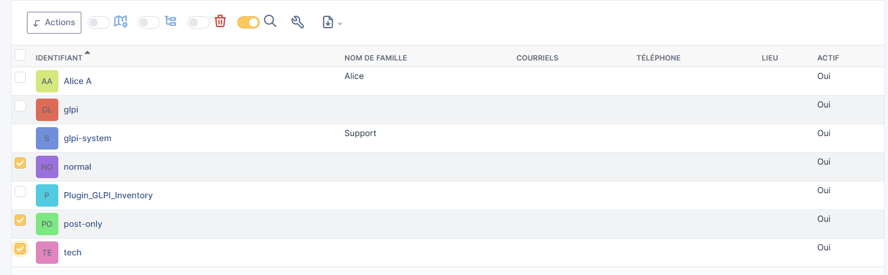
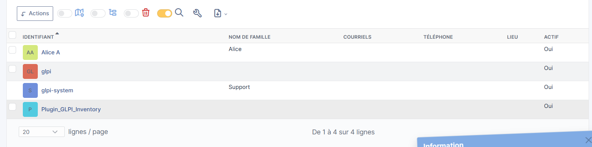
Administration → Utilisateurs → Ajouter
| Champ | Valeur |
|---|---|
| Identifiant | TechParis |
| Nom de famille | TechnicienParis |
| Prénom | TechnicienParis |
| Mot de passe | Admin1234! |
| Actif | Oui |
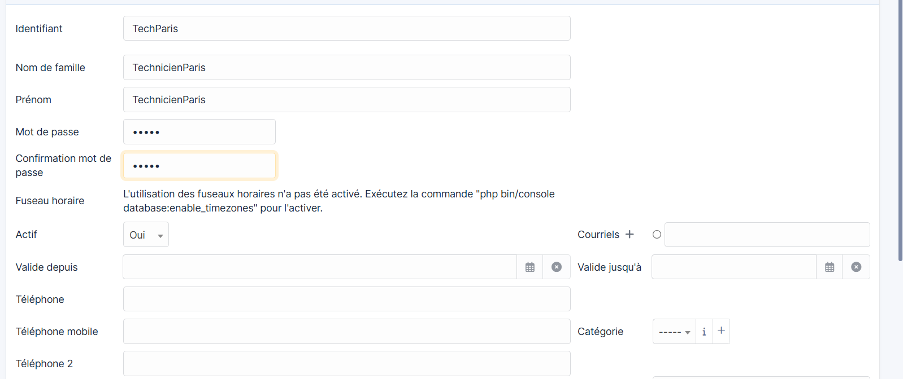
De la même façon, créer les utilisateurs employéParis1 et employéParis2 avec le profil Self-Service.
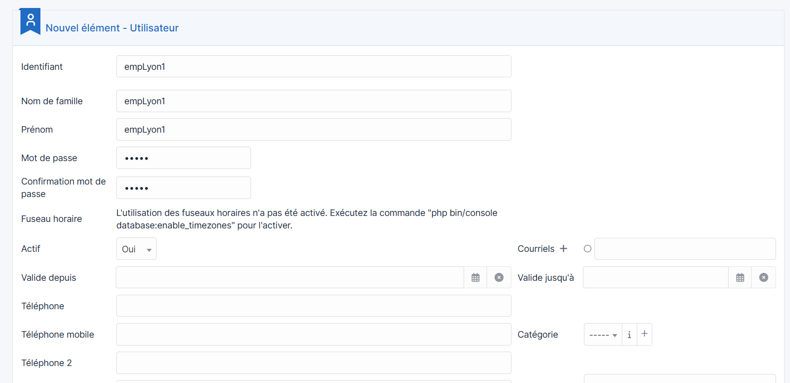
Administration → Entités → Ajouter
| Champ | Valeur |
|---|---|
| Nom | Paris |
| Comme enfant de | Entité racine |
| Commentaires | Paris |
Cliquer sur Ajouter.
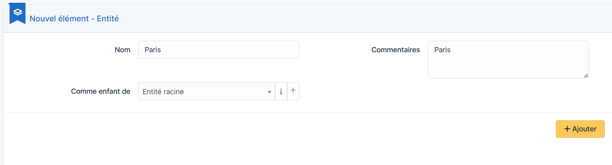
Après avoir créé les entités Paris et Lyon, la liste doit afficher :
Pour chaque utilisateur Paris, aller dans Habilitations et assigner l'entité Paris avec le profil correspondant.
Créer les techniciens techLyon1, techLyon2 et les employés empLyon1, empLyon2, empLyon3 rattachés à l'entité Lyon.
Se déconnecter puis se connecter avec employéParis1. Le portail Self-Service s'affiche avec la liste des tickets.
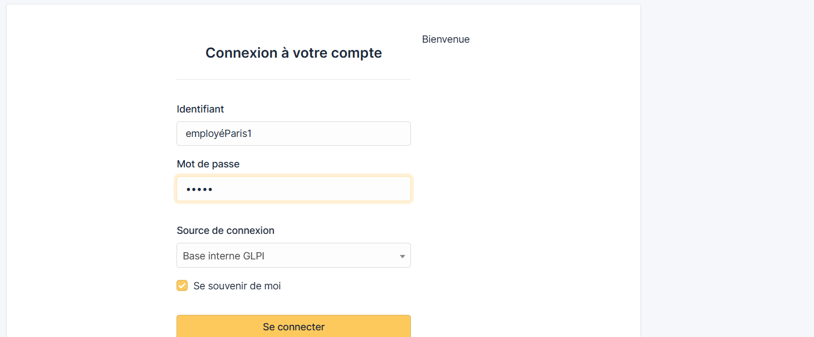
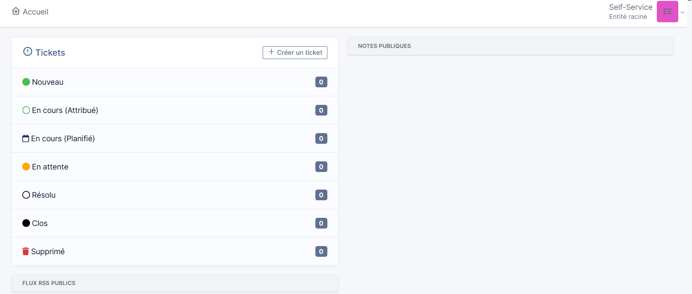
Cliquer sur + Créer un ticket et remplir le formulaire.
Se connecter avec TechnicienParis → aller dans Assistance → Tickets → ouvrir le ticket → ajouter une solution et clore le ticket.
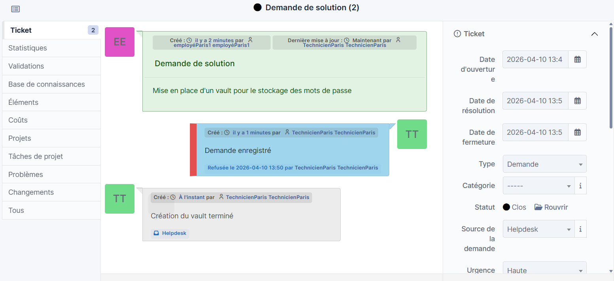
Chaque self-service Lyon crée un ticket. Vérifier qu'ils apparaissent bien dans l'entité Lyon.
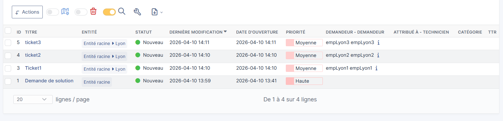
Configuration → Intitulés → Catégories de tickets → Ajouter
Créer les 4 catégories suivantes en sélectionnant l'entité Paris :
| Catégorie | Description |
|---|---|
Réseau |
Incidents liés au réseau (switch, Wi-Fi, VPN) |
Logiciel |
Problèmes applicatifs et système |
Matériel |
PC, imprimantes, périphériques |
Comptes et droits |
Création de comptes, réinitialisation de mots de passe |
Administration → Règles → Règles d'affectation des tickets → Ajouter
Informations générales :
| Champ | Valeur |
|---|---|
| Nom | Affectation Réseau → TechnicienParis |
| Entité | Paris |
| Actif | Oui |
Critère :
| Critère | Condition | Valeur |
|---|---|---|
Catégorie |
est |
Réseau |
Action :
| Action | Opération | Valeur |
|---|---|---|
Technicien assigné |
Assigner |
TechnicienParis |
Se connecter avec employéParis2 → créer un nouveau ticket :
| Champ | Valeur |
|---|---|
| Type | Incident |
| Catégorie | Réseau |
| Urgence | Moyenne |
| Titre | Problème réseau |
| Description | Problème de switch |
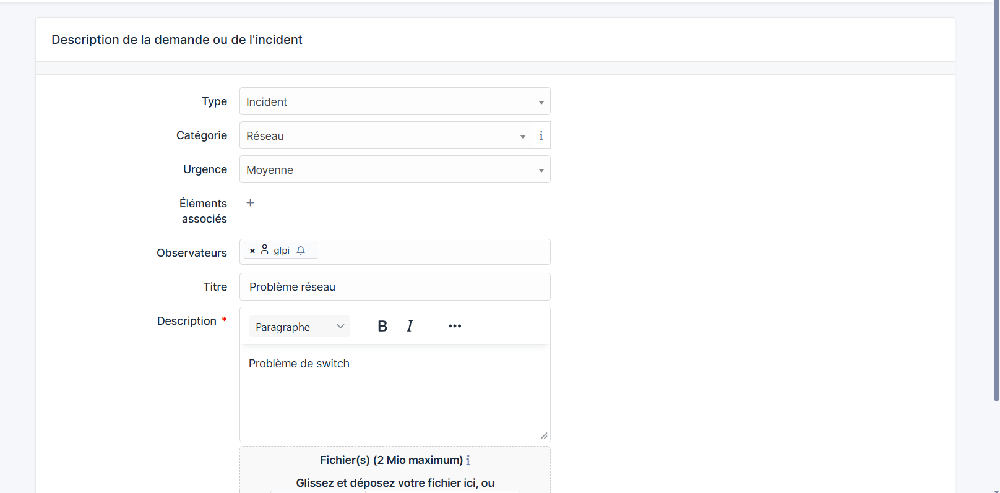
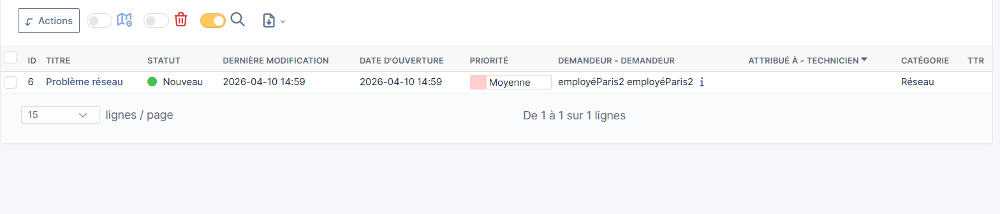
Création (Self-Service)
↓
Nouveau
↓
Attribution automatique (règle d'affectation)
↓
En cours (Attribué)
↓
Résolution (Technicien)
↓
Résolu
↓
Clôture
↓
Clos| Utilisateur | Profil | Entité |
|---|---|---|
TechnicienParis |
Technician | Paris |
employéParis1 |
Self-Service | Paris |
employéParis2 |
Self-Service | Paris |
techLyon1 |
Technician | Lyon |
techLyon2 |
Technician | Lyon |
empLyon1 |
Self-Service | Lyon |
empLyon2 |
Self-Service | Lyon |
empLyon3 |
Self-Service | Lyon |